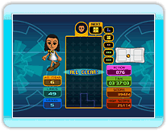
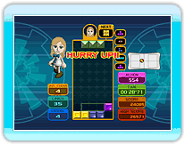
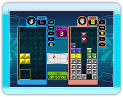

19 |
Wii Balance Board Tetris |
 |

Played using the Wii Balance Board. For information
regarding controls see "View Rules" in the game's Options menu. Standard rules are the same as those for "Beginner's Marathon". In addition to score and time, "Action Points" are awarded in accordance with a player's movements.

Played using the Wii Balance Board. For information
regarding controls see "View Rules" in the game's Options menu. Standard rules are the same as those for "Beginner's Marathon". However, playing time is limited to 3 minutes. Aim for the high score by earning as many standard points and Action Points within the limited time period.

Played using the Wii Balance Board. For information
regarding controls see "View Rules" in the game's Options menu. Standard rules are the same as those for "Computer Battle". |
 |
 |
 |